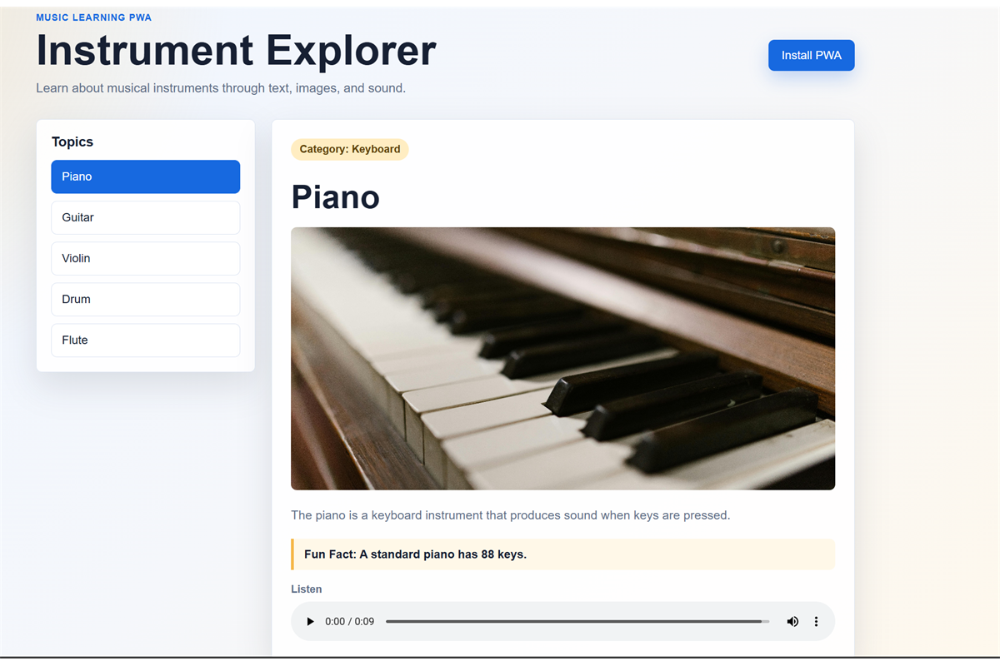

Dynamic Lessons
Topics are loaded from a JSON file and displayed in an interactive menu.
Progressive Web App
A music learning app that helps users explore instruments through short lessons, curated images, and audio examples.
Screenshots

Topics are loaded from a JSON file and displayed in an interactive menu.
Each instrument includes a playable audio example for a richer learning experience.
The manifest and service worker let users install the app and revisit cached content offline.
Download
Users can also run the app directly in the browser without installing it.
Go To App Read Documentation